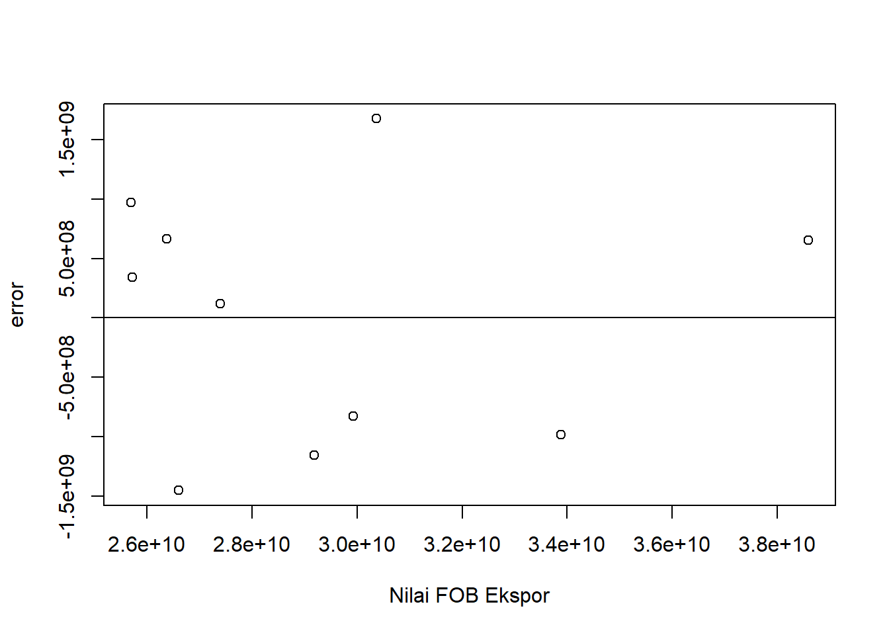
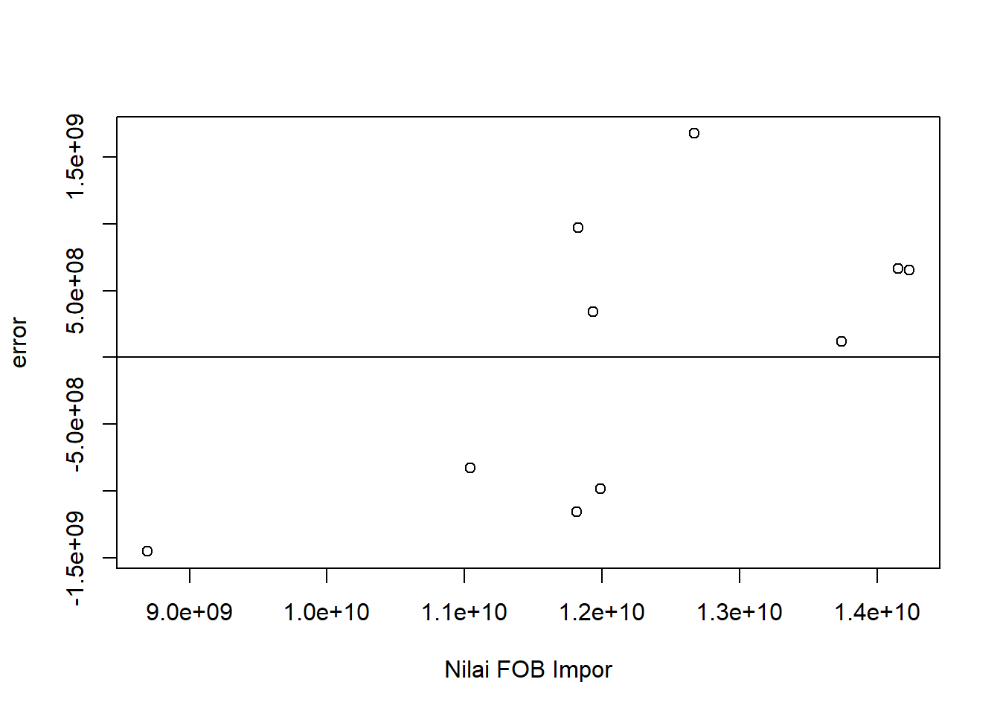
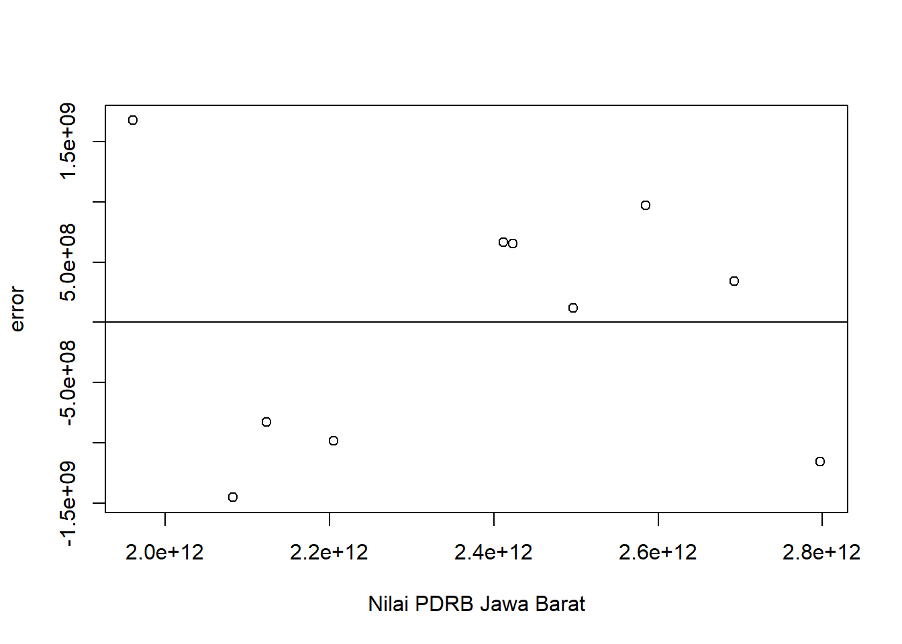
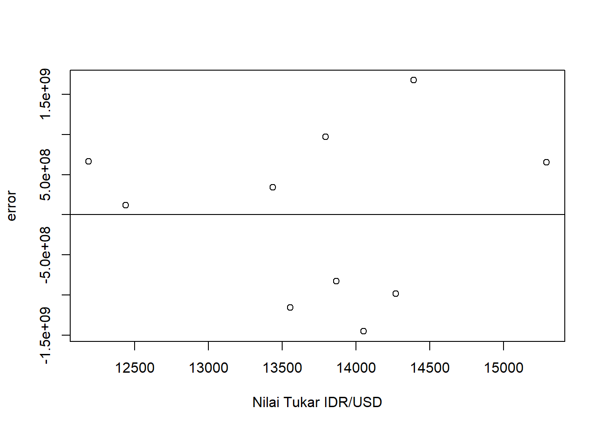

setwd("D:/METOPEL UAS/SHERLY METOPEL")
library(readxl)
library(tidyverse)
library(kableExtra)
library(WDI)Analisis Pengaruh Ekspor Impor terhadap PDRB Jawa Barat 2013-2022
Metode Penelitian Politeknik APP Jakarta

1 Pendahuluan
1.1 Latar belakang
Pertumbuhan ekonomi adalah proses meningkatnya kegiatan perekonomian sehingga produksi barang dan jasa bertambah. Menurut Simon Kuznets dalam Todaro (2000) mendefinisikan pertumbuhan ekonomi adalah kenaikan kapasitas dalam jangka panjang dari suatu negara untuk menyediakan berbagai barang ekonomi kepada penduduknya. Tolak ukur kemajuan suatu daerah adalah dengan meningkatnya pertumbuhan ekonomi didaerah tersebut. Meningkatnya pertumbuhan ekonomi dapat dilihat dari jumlah produksi barang dan jasa yang akan meningkatkan pendapatan didaerah tersebut. Dengan adanya keinginan setiap daerah untuk memiliki pertumbuhan ekonomi yang pesat, maka setiap daerah melakukan kegiatan jual beli dengan daerah lain, salah satunya melalui kegiatan ekspor dan impor yang dilakukan dengan negara lain.
Tujuan dari dilakukannya kegiatan ekspor dan impor adalah guna untuk meningkatkan pendapatan daerah tersebut dan juga memenuhi kebutuhan daerah. Adanya kegiatan ekspor (jual) dan impor (beli) didaerah tersebut maka akan memberikan pengaruh terhadap pertumbuhan ekonomi, karena baik ekspor maupun impor keduanya sama-sama memberikan efek dan berperan terhadap kegiatan ekonomi yang akan berpengaruh pada pertumbuhan ekonomi. Menurut Mankiw (2006:76) PDRB adalah nilai pasar semua barang dan jasa akhir yang diproduksi dalam perekonomian selama kurun waktu tertentu. Pertumbuhan ekonomi dapat dilihat dari Produk Domestik Regional Bruto (PDRB), dimana PDRB ini menggambarkan kondisi atau kemampuan suatu daerah dalam mengelola sumber daya untuk menciptakan nilai tambah.
Jawa Barat adalah salah satu provinsi pulau Jawa yang memiliki sumber daya yang dimanfaatkan untuk dijual atau ekspor, tetapi juga bukan hanya menjual atau mengekspor tetapi juga melakukan kegiatan pembelian atau impor dari negara lain, ditambah lagi dengan jumlah penduduk di provinsi Jawa Timur yang cukup banyak, maka hal ini akan berkaitan dengan kegiatan ekonomi di Jawa Barat. Kondisi PDRB Jawa Barat dari tahun 2012-2022 selalu mengalami peningkatan, tetapi dalam bidang ekspor dan impor secara keseluruhan tidak selalu mengalami peningkatan atau berada pada kondisi fluktuatif. Sehingga dapat dipastikan adanya faktor lain yang mempengaruhi PDRB Jawa Barat.
1.2 Ruang lingkup
Dalam penelitian ini penulis mengambil objek penelitian dari Badan Pusat Statistik Jawa Barat. Ruang lingkup penelitian ini terdapat 4 variabel,antara lain nilai ekspor keseluruhan provinsi Jawa Barat, nilai impor keseluruhan Jawa Barat, nilai Produk Domestik Regional Bruto Jawa Barat dan Nilai tukar Rupiah terhadap Dolar AS. Data yang digunakan adalah data yang bersifat time series yaitu dalam kurun waktu 2013-2022 dengan satuan yang telah diubah ke dalam USD guna untuk memudahkan penyetaraan mata uang secara internasional, data inilah yang kemudian menjadi objek penelitian.
1.3 Rumusan masalah
- Bagaimana pengaruh Ekspor dan Impor di Jawa Barat terhadap Produk Domestik Regional Bruto dalam kurun waktu 2012-2022?
- Apa Hubungan ekspor dan impor terhadap peningkatan PDRB di Jawa Barat?
1.4 Tujuan dan manfaat penelitian
Berdasarkan latar belakang dan permasalahan yang ada maka tujuan dari penelitian ini adalah untuk mengetahui pengaruh ekspor dan impor terhadap PDRB Jawa Barat dan mengetahui hubungan ekspor dan impor terhadap peningkatan PDRB Jawa Barat. Adapun manfaat dari penelitian ini antara lain:
1.4.1 1. Manfaat Teoritis
Penelitian ini diharapkan dapat memberikan bantuan pemikiran dan menjadi ilmu pengetahuan bagi para pembaca untuk menambah wawasan seputar ekonomi.
1.4.2 2. Manfaat Praktis
1.4.2.1 a. Bagi Penulis
Diharapkan penelitian ini bisa menjadi referensi bagi mereka yang ingin memperdalam tentang kegiatan ekspor, impor, dan pertumbuhan ekonomi, sehingga dengan adanya karya lain secara tidak langsung penelitian ini mengalami penyempurnaan secara terus menerus. Dan diharapkan penelitian ini juga dapat menjadi referensi bagi setiap penulis yang ingin mengetahui penelitian menggunakan sistem regresi melalui R Studio.
1.4.2.2 b. Bagi instansi
Sebagai bahan masukan dan saran guna untuk memperbaiki sistem perekonomian khususnya di daerah Jawa Barat.
1.5 Package
2 Studi pustaka
Ekspor adalah kegiatan mengeluarkan barang dari daerah pabean. Menurut Lipsey (1995), ekspor dapat diartikan sebagai total penjualan barang yang dapat dihasilkan oleh suatu negara, kemudian diperdagangkan kepada negara lain dengan tujuan mendapatkan devisa. Suatu negara dapat mengekspor barang-barang yang dihasilkannya ke negara lain yang tidak dapat menghasilkan barang-barang yang dihasilkan negara pengekspor. Menurut Salvatore (1997), terdapat beberapa alasan sehingga dilakukannya ekspor oleh suatu negara, antara lain:
Keinginan untuk memenuhi berbagai kebutuhan yang tidak dapat dipenuhi dari produksi atau hasil dalam negeri, termasuk kebutuhan yang dapat diproduksi namun diperlukan biaya yang lebih tinggi dibandingkan jika diproduksi di luar negeri.
Keinginan suatu negara untuk memperluas pemasaran komoditas domestik untuk meningkatkan sumber devisa bagi kegiatan pembangunan.
Impor adalah kegiatan memasukan barang ke dalam daerah pabean. Impor bertindak sebaliknya daripada ekspor, saat ekspor dapat meningkatkan pendapatan nasional maka impor dapat menambah pengeluaran dan menurunkan pendapatan nasional suatu daerah. Menurut Sukirno (2011) aliran barang impor dapat menimbulkan aliran keluar atau bocoran dari aliran pengeluaran sektor rumah tangga ke sektor perusahaan yang pada akhirnya menurunkan pendapatan nasional yang mungkin dapat dicapai. Tetapi disatu sisi impor terdapat sisi baiknya yaitu membantu negara memenuhi kebutuhan dalam negeri apabila barang atau jasa yang diimpor tidak ada di negara atau daerah tersebut, hal ini selaras dengan yang dijelaskan dalam teori Hecksher-Ohlin (dalam Appleyeard, Field dan Cobb, 2008) menyatakan bahwa suatu negara akan mengimpor produk/barang yang menggunakan faktor produksi yang tidak atau jarang dimiliki oleh negara tersebut. Kegiatan ini akan menguntungkan bagi negara tersebut dibandingkan melakukan produksi sendiri namun tidak secara efisien.
Pertumbuhan ekonomi dapat diartikan sebagai perkembangan kegiatan perekonomian yang menyebabkan barang dan jasa yang dihasilkan masyarakat meningkat (Sukirno, 2012). Salah satu indikator untuk melihat kondisi ekonomi suatu daerah adalah PDRB. PDRB pada dasarnya adalah jumlah nilai tambah yang dihasilkan oleh seluruh unit usaha dalam suatu negara tertentu, atau merupakan jumlah dari nilai barang dan jasa yang diproduksi oleh seluruh unit ekonomi. Sjafrizal (2008), menjelaskan bahwa PDRB merupakan penjumlahan dari konsumsi, investasi, pengeluaran pemerintah, dan ekspor, dikurangi impor.
3 Metode penelitian
3.1 Data
| Tahun | ekspor | impor | kurs | pdrb |
|---|---|---|---|---|
| 2013 | $26.379.860.000,00 | $14.154.310.000,00 | Rp 12.189,00 | Rp 2.411.831.220.000,00 |
| 2014 | $27.401.010.000,00 | $13.742.100.000,00 | Rp 12.440,00 | Rp 2.496.685.523.000,00 |
| 2015 | $25.694.460.000,00 | $11.827.700.000,00 | Rp 13.795,00 | Rp 2.584.550.377.000,00 |
| 2016 | $25.726.660.000,00 | $11.933.350.000,00 | Rp 13.436,00 | Rp 2.692.350.550.000,00 |
| 2017 | $29.179.180.000,00 | $11.816.840.000,00 | Rp 13.555,00 | Rp 2.797.091.846.000,00 |
| 2018 | $30.369.912.070,00 | $12.671.664.560,00 | Rp 14.390,00 | Rp 1.960.627.650.000,00 |
| 2019 | $29.927.416.350,00 | $11.044.960.480,00 | Rp 13.866,00 | Rp 2.123.153.710.000,00 |
| 2020 | $26.600.282.190,00 | $8.693.481.680,00 | Rp 14.050,00 | Rp 2.082.107.260.000,00 |
| 2021 | $33.881.218.640,00 | $11.990.573.650,00 | Rp 14.269,00 | Rp 2.204.660.230.000,00 |
| 2022 | $38.591.218.640,00 | $14.234.573.650,00 | Rp 15.289,00 | Rp 2.422.782.320.000,00 |
3.2 Metode analisis
Metode yang dipilih adalah regresi Multivariat dengan lebih dari satu variabel independen. Penelitian ini merbaksud mencari hubungan antara Ekspor (X1) Impor (Y) terhadap PDRB Jawa Barat (X2) yang juga di tambah dengan variabel nilai tukar (X3)
Spesifikasi yang dilakukan adalah:
\[ Y=\beta_0 + \beta_1 X1+\beta_2 X2+\beta_3 X3. \] di mana \(Y\)= Nilai Impor, \(X1\) = Nilai Ekspor ,\(X2\)= PDRB Jawa Barat, \(X3\)= Kurs/Nilai Tukar IDR/USD .
4 Pembahasan
4.1 Pembahasan masalah
Pada bagian ini dapat ditampilkan data dan visualisasi data yang telah dikumpulkan.
#impor dataset
setwd("D:/METOPEL UAS/SHERLY METOPEL")
read_excel("pdrb2.xlsx")# A tibble: 10 × 5
Tahun ekspor impor kurs pdrb
<dbl> <dbl> <dbl> <dbl> <dbl>
1 2013 26379860000 14154310000 12189 2411831220000
2 2014 27401010000 13742100000 12440 2496685523000
3 2015 25694460000 11827700000 13795 2584550377000
4 2016 25726660000 11933350000 13436 2692350550000
5 2017 29179180000 11816840000 13555 2797091846000
6 2018 30369912070 12671664560 14390 1960627650000
7 2019 29927416350 11044960480 13866 2123153710000
8 2020 26600282190 8693481680 14050 2082107260000
9 2021 33881218640 11990573650 14269 2204660230000
10 2022 38591218640 14234573650 15289 2422782320000dat <- read_excel("pdrb2.xlsx")
kbl(dat) %>%
kable_styling(bootstrap_options = c("striped", "hover", "condensed", "responsive"))| Tahun | ekspor | impor | kurs | pdrb |
|---|---|---|---|---|
| 2013 | 26379860000 | 14154310000 | 12189 | 2.411831e+12 |
| 2014 | 27401010000 | 13742100000 | 12440 | 2.496686e+12 |
| 2015 | 25694460000 | 11827700000 | 13795 | 2.584550e+12 |
| 2016 | 25726660000 | 11933350000 | 13436 | 2.692351e+12 |
| 2017 | 29179180000 | 11816840000 | 13555 | 2.797092e+12 |
| 2018 | 30369912070 | 12671664560 | 14390 | 1.960628e+12 |
| 2019 | 29927416350 | 11044960480 | 13866 | 2.123154e+12 |
| 2020 | 26600282190 | 8693481680 | 14050 | 2.082107e+12 |
| 2021 | 33881218640 | 11990573650 | 14269 | 2.204660e+12 |
| 2022 | 38591218640 | 14234573650 | 15289 | 2.422782e+12 |
reg1<-lm(impor~ekspor+pdrb+kurs,data=dat)dat$m<-resid(reg1)
plot(dat$ekspor,dat$m,xlab="Nilai FOB Ekspor",ylab="error")
abline(h=0) # membuat garis horizontal di y=0
dat$m<-resid(reg1)
plot(dat$impor,dat$m,xlab="Nilai FOB Impor",ylab="error")
abline(h=0)
dat$m<-resid(reg1)
plot(dat$pdrb,dat$m,xlab="Nilai PDRB Jawa Barat",ylab="error")
abline(h=0)
dat$m<-resid(reg1)
plot(dat$kurs,dat$m,xlab="Nilai Tukar IDR/USD",ylab="error")
abline(h=0)
4.2 Analisis masalah
Hasil regresinya adalah
reg1<-lm(impor~ekspor+pdrb+kurs,data=dat)
summary(reg1)
Call:
lm(formula = impor ~ ekspor + pdrb + kurs, data = dat)
Residuals:
Min 1Q Median 3Q Max
-1.451e+09 -9.455e+08 2.295e+08 6.627e+08 1.675e+09
Coefficients:
Estimate Std. Error t value Pr(>|t|)
(Intercept) 1.888e+10 9.387e+09 2.011 0.0910 .
ekspor 4.142e-01 1.509e-01 2.746 0.0335 *
pdrb 1.351e-03 1.644e-03 0.822 0.4425
kurs -1.606e+06 7.113e+05 -2.258 0.0647 .
---
Signif. codes: 0 '***' 0.001 '**' 0.01 '*' 0.05 '.' 0.1 ' ' 1
Residual standard error: 1.281e+09 on 6 degrees of freedom
Multiple R-squared: 0.5995, Adjusted R-squared: 0.3992
F-statistic: 2.993 on 3 and 6 DF, p-value: 0.1174Dari hasil regresi yang di tampilkan, dimana R-squared menunjukan hasil 0.5995, yang artinya angka tersebut mengandung makna bahwa X1, X2,dan X3 secara simultan berpengaruh terhadap Y sebesar 59,95%. Sedangkan 40,05% sisanya dipengaruhi oleh variabel lain di luar persamaan ini.
Kemudian, besaran nilai yang tertera pada Ekspor keseluruhan, dapat diartikan sebagai setiap nilai ekspor naik 1 akan membuat nilai impor ikut naik sebesar 4,142 , berpengaruh cukup signifikan.
Variabel pdrb juga menunjukan pengaruh positif walaupun tidak signifikan, dimana setiap kenaikan PDRB Jawa Barat sebesar 1 juga akan meningkatkan nilai impor sebesar 1,531.
Terakhir pada variabel nilai tukar, menunjukan hasil negatif signifikan, dimana setiap kenaikan kurs sebesar 1 akan mengakibatkan nilai impor turun sebersar -1,606.
5 Kesimpulan
Kesimpulan dari analisis ini adalah nilai PDRB Jawa Barat banyak di pengaruhi oleh berbagai faktor, yang ini dapat kita lihat dimana hasil regresi di atas masih menyisakan sekitar 40% kemungkinan analisis membutuhkan variabel lain untuk dapat menjelaskan masalah PDRB di Jawa Barat ini.
Kemudian, melihat hasil regresi antara impor dengan ekspor yang positif signifikan dapat diartikan bahwa terjadi sebuah fenomena konsumtif yang masih dilakukan oleh masyarakat Indonesia khususnya Jawa Barat, dimana jumlah impor meningkat 4,1 poin lebih banyak dibandigkan ekspor.
Hal ini diperjelas dengan setiap peningkatan PDRB Jawa Barat juga memberikan dampak yang positif terhadap nilai Impor, atau setiap pendapatan naik masyarakat Jawa Barat cenderung banyak melakukan pembelian daripada menjual/memproduksi sesuatu.
Terakhir untuk kurs/nilai tukar barulah pada variabel ini menunjukan hasil negatif, yang artinya saat mata uang rupiah sedang melemah kita tentu akan membayar lebih mahal saat hendak membeli/mengimpor sesuatu dengan jenis dan kuantitas yang sama dibandingkan sebelumnya sehingga kita cenderung menahan pembelian/belanja sesuatu dalam keadaan kurs yang sedang melemah.
6 Referensi
Affandi, A., & Gunawan, E. (2018). PENGARUH EKSPOR, IMPOR DAN JUMLAH PENDUDUK TERHADAP PDB INDONESIA TAHUN 1969 -2016. Jurnal Perspektif Ekonomi Darussalam (Darussalam Journal of Economic Perspec, 4(2), Article 2. https://doi.org/10.21157/j.ked.hewan.v%vi%i.13021
Nofinawati, N., Lubis, N. I., & Nasution, J. (2017). PENGARUH EKSPOR DAN IMPOR TERHADAP PRODUK DOMESTIK REGIONAL BRUTO (PDRB) PROVINSI SUMATERA UTARA TAHUN 2008-2015. Al-Masharif: Jurnal Ilmu Ekonomi Dan Keislaman, 5(1), Article1. https://doi.org/10.24952/masharif.v5i1.1415
Hodijah, S., & Angelina, G. P. (2021). ANALISIS PENGARUH EKSPOR DAN IMPOR TERHADAP PERTUMBUHAN EKONOMI DI INDONESIA. Jurnal Manajemen Terapan Dan Keuangan, 10(01), Article 01. https://doi.org/10.22437/jmk.v10i01.12512.
HF Naionggolan. (2023). PENGARUH EKSPOR IMPOR TERHADAP PDRB PROVINSI JAWA BARAT 2017-2021. Jurnal Economina, 02(02), https://ejournal.45mataram.ac.id/index.php/economina/article/view/309